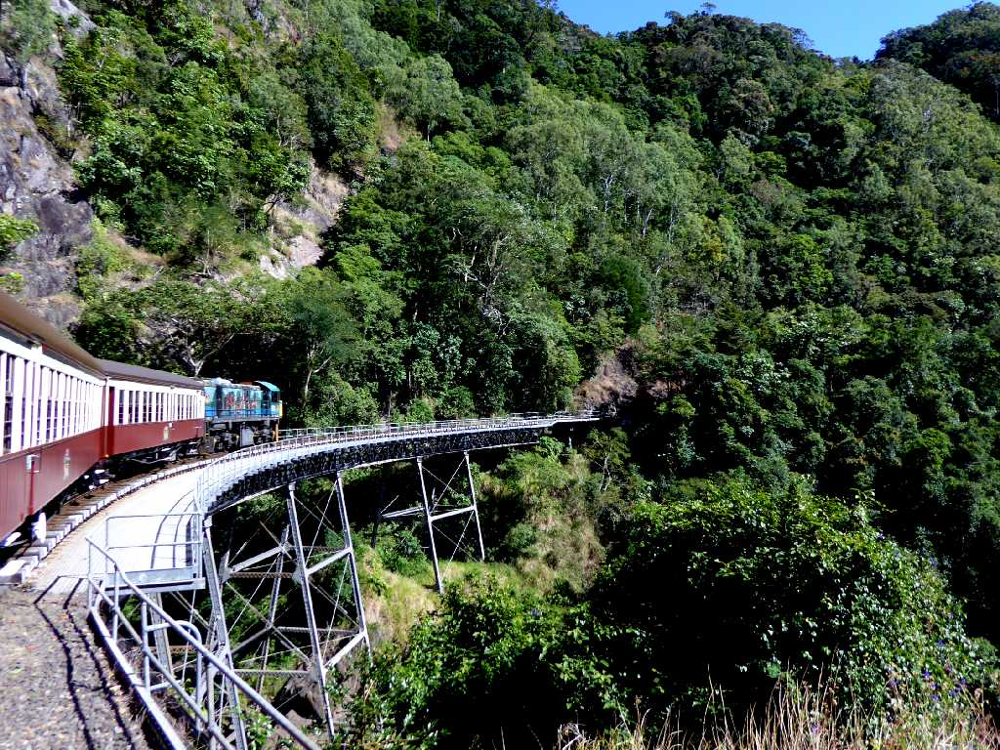
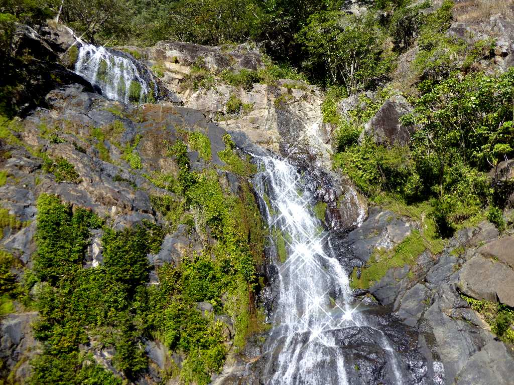
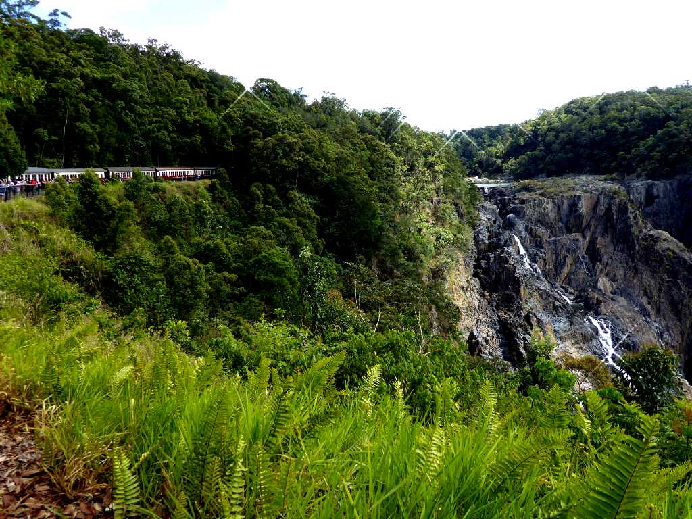
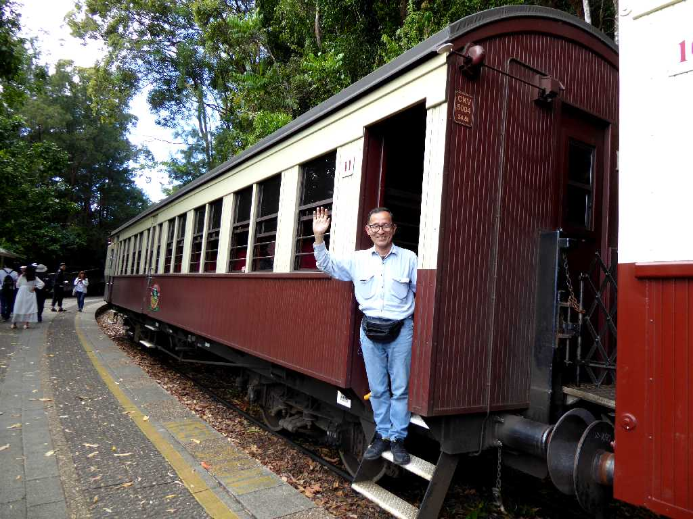
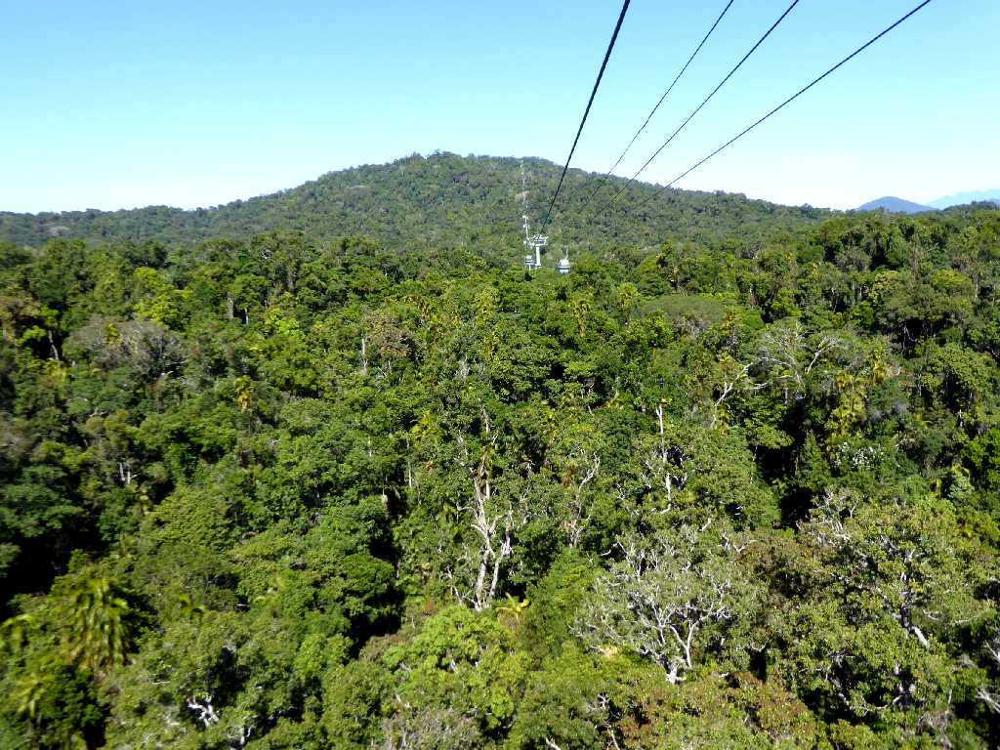
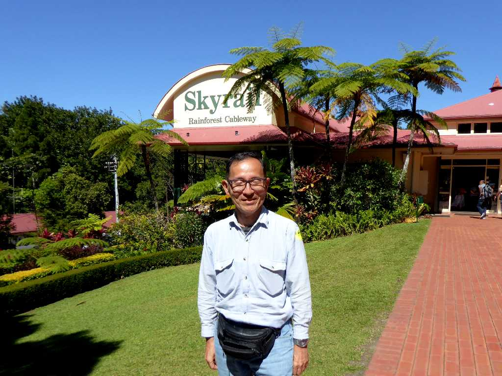

Stoney Creek Falls Kuranda Scenic Railway
１８９１年に金鉱山や錫鉱山等の物資輸送のため５年の歳月をかけ開通した鉄道

Stoney Creek Falls
列車はストーニークリーク滝の真正面を通過する

Barron Falls Kuranda Scenic Railway
落差２６０mのバロン滝

September 3 2019 Kuranda Scenic Railway
ビンテージ車両を用いたキュランダ高原鉄道
Kuranda Skyrail
恐竜が生息していた１億３千年前に形成された世界最古の熱帯雨林キュランダの森の上空をスカイレイルで空中散歩

Kuranda Skyrail
１９９５年エコツールズムのために開通

September 3 2019 Kuranda Skyrail